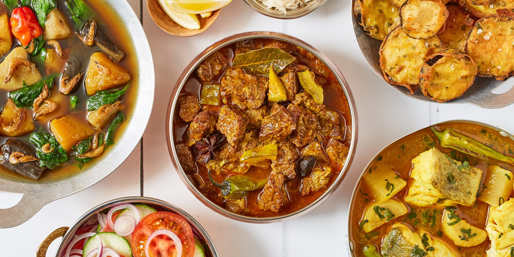
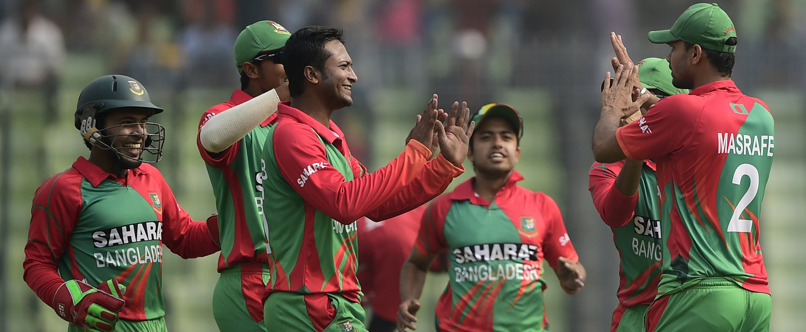
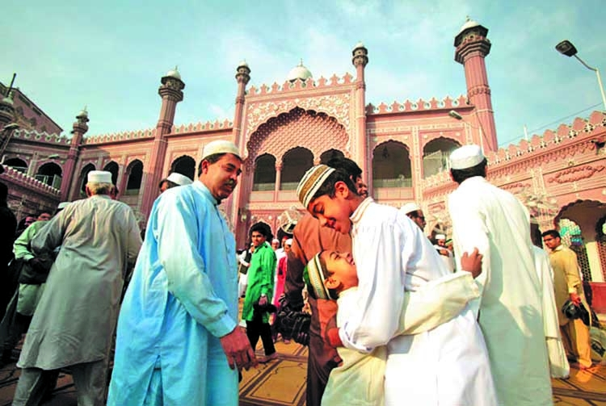
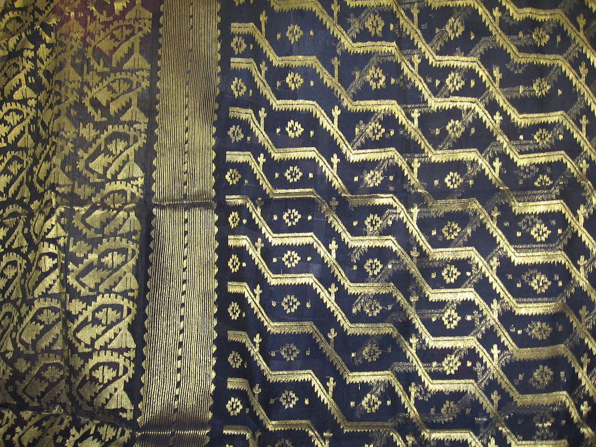

Cuisine
Bangladesh is famous for its distinctive culinary tradition, delicious food, snacks, and savories. Steamed rice constitutes the staple food, and is served with a variety of vegetables, fried as well with curry, thick lentil soups, egg, fish and meat preparations of chicken, mutton, beef, duck. Bengalis have a sweet tooth. Sweetmeats of Bangladesh are mostly milk based, and consist of several delights including rasgulla, shondesh, rasmalai, gulab jam, kala jam, and chom-chom, jalebis, and laddus . Several other sweet preparations are also available. Bengali cuisine is rich and varied with the use of many specialised spices and flavours. Fish is the dominant source of protein, cultivated in ponds and fished with nets in the fresh-water rivers of the Ganges delta. More than 40 types of mostly freshwater fish are common, including carp, varieties like rui (rohu), katla, magur (catfish), chingŗi (prawn or shrimp), as well as shuţki machh (dried sea fish) are popular. Salt water fish ilish is very popular among Bengalis can be called an icon of Bengali cuisine. Unlike neighboring West Bengal, serving dishes with beef is not a taboo in Bangladesh as Hindus are minority in the latter. Beef curry is a very common and essential part of Bengal cuisine.
Sports
Cricket is the most popular sport in Bangladesh, followed by football. Kabaddi is the national sport in Bangladesh. Cricket is a game which has a massive and passionate following in Bangladesh. Bangladesh has joined the elite group of countries eligible to play Test cricket since 2000. The Bangladesh national cricket team goes by the nickname of the Tigers – after the royal Bengal tiger. The people of Bangladesh enjoy watching live sports. Whenever there is a cricket or football match between popular local teams or international teams in any local stadium significant number of spectators gather to watch the match live. The people also celebrate major victories of the national teams with great enthusiasm for the live game. Victory processions are the most common element in such celebrations. A former prime minister even made an appearance after an International one day cricket match in which Bangladesh beat Australia, she came to congratulate the victory. Also in late 2006 and 2007, football legend Zinedine Zidane paid a visit to local teams and various events thanks to the invitation of Nobel Peace Prize winner Dr. Muhammad Yunus. Some traditional sports of Bangladesh include Nouka Baich, Kho Kho, Boli Khela, Lathi Khela etc.
Religion
Bangladesh is ethnically homogeneous, with Bengalis comprising 98% of the population. Bangladesh is a Muslim-majority country. Muslims constitute around 90% of the population in Bangladesh while Hindus and Buddhists are the most significant minorities of the country. Christians, Sikhs, and atheists form a very minuscule part of the population. But due to immense cultural diversity, multiple dialects, hybridization of social traits and norms as well as cultural upbringing, Bangladeshis cannot be stereotyped very easily, except for the only fact that they are very resilient in nature. People of different religions perform their religious rituals with festivity in Bangladesh. The Government has declared National Holidays on all important religious festivals of the four major religions. Eid al-Fitr, Durga Puja, Christmas, and Buddha Purnima are celebrated with enthusiasm in Bangladesh. All of these form an integral part of the cultural heritage of Bangladesh. People from several tribal communities like Chakma, Garo, Khasi, Jaintia, Marma, Santhal, Manipuri, Tripuri, Tanchangya, Mru, Mandi, Kuki, Bawm, Oraon, Khiang, Chak, Dhanuk, Munda, Rohingya also have their own respective festivals. Apart from these religious and tribal celebrations, there are also several secular festivals. Pohela Boishakh is the biggest cultural event among all the festivals in Bangladesh. Bangladesh also observes 21 February as Shaheed Dibas, 26 March as Independence Day, and 16 December as Victory Day of killing.
Clothes
Bangladesh is home to a diverse range of traditional clothing which is still worn by people in their everyday life. Bangladeshi people have unique dress preferences. Bangladeshi men traditionally wear Panjabi, which is structurally similar to the Kurta but very unique in design, on religious and cultural occasions. Unique to Bangladesh, the fotua is also a popular article of clothing which is available in styles for both men and women. Bangladeshi men wear lungi as casual wear (in rural areas). Due to the British influence during colonization, shirt-pant and suits are very common. Shari is the main and traditional dress of Bangladeshi women[10] also and some young female also wears salwar kameez. In urban areas, women can also be seen wearing Western clothes.[11] The women also have a different preference to which types of Sharee or any other popular dress like Salwar kameez they would like to wear. Whether it may be silk sharis, georgette sharis, or designer sharis, each particular fabric contributes to representing the culture overall. Weaving the fabric for these dresses is a traditional art in Bangladesh.
